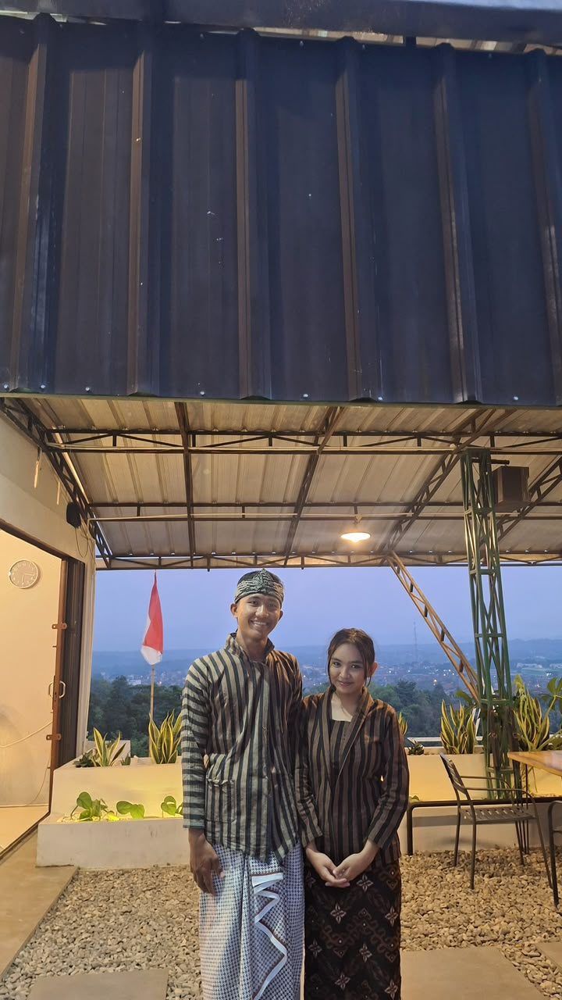
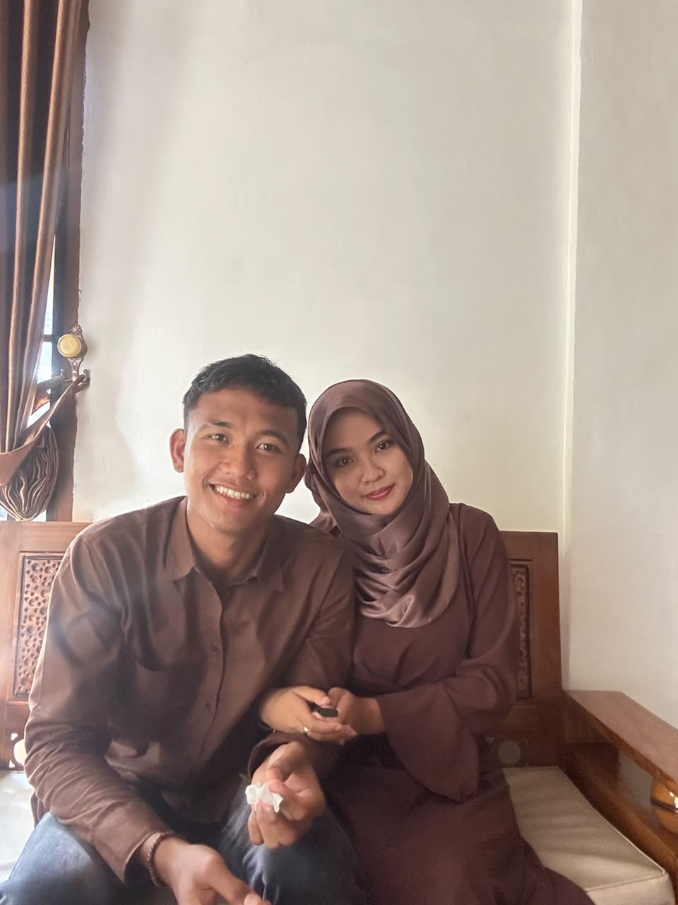
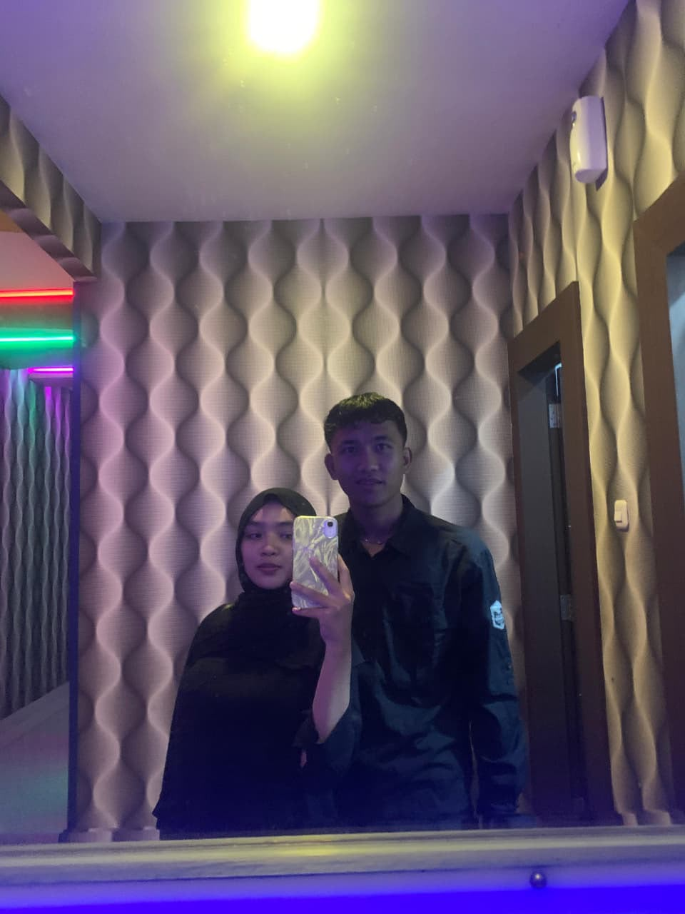
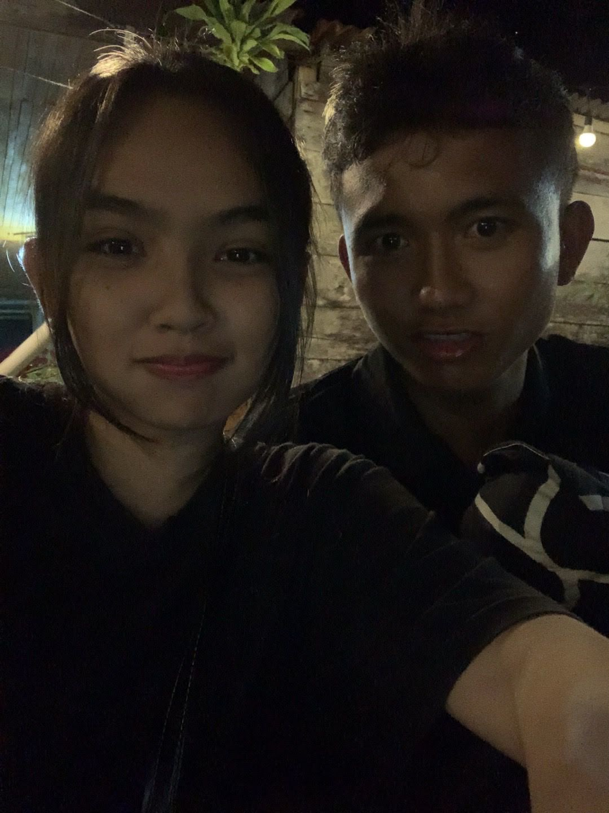
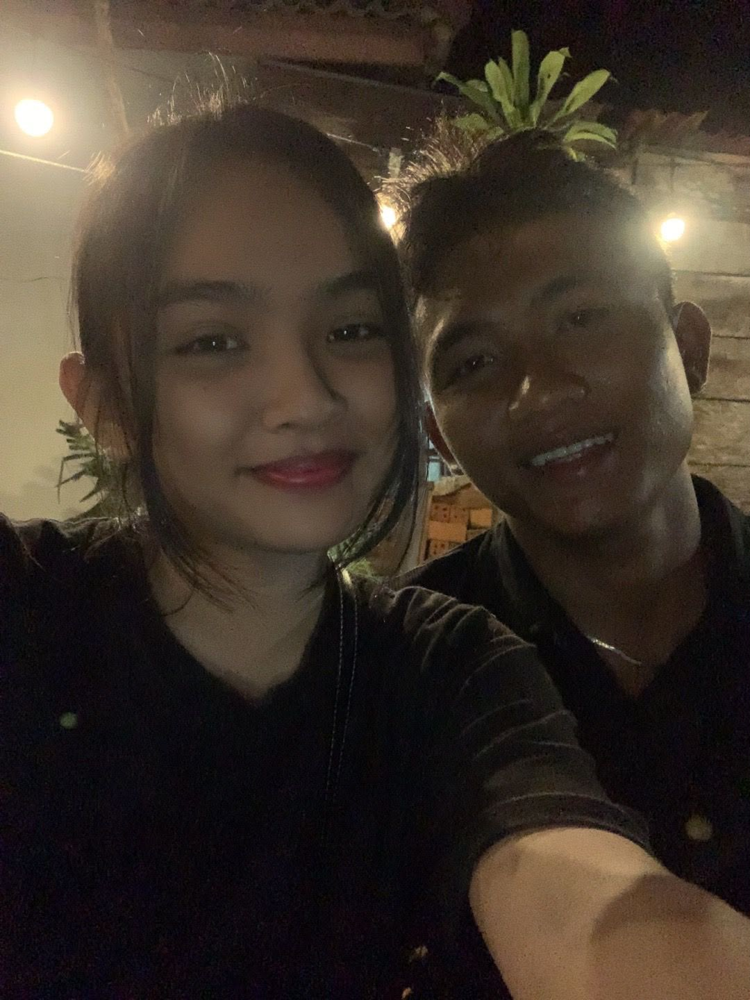
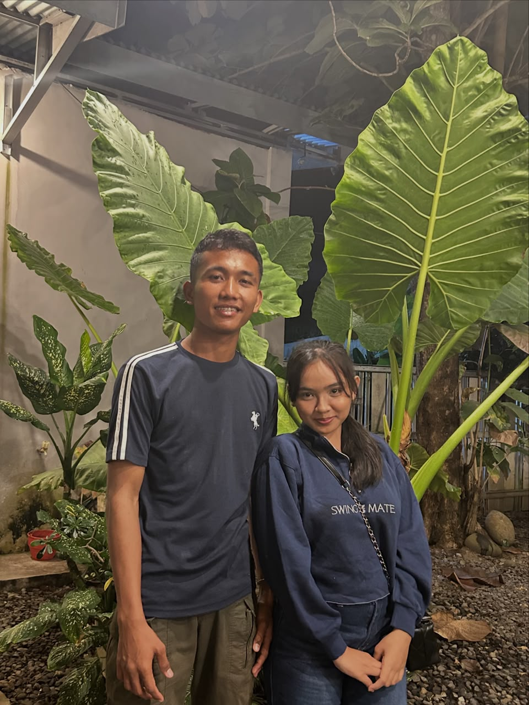
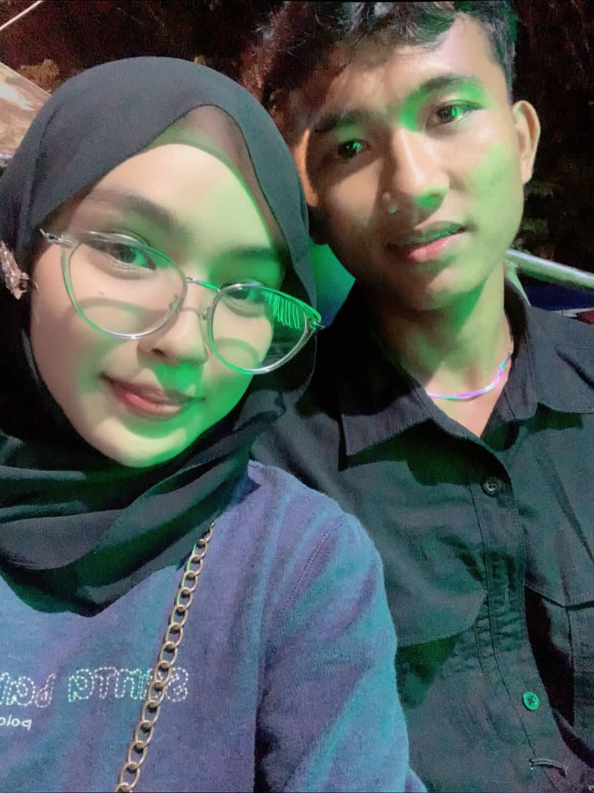
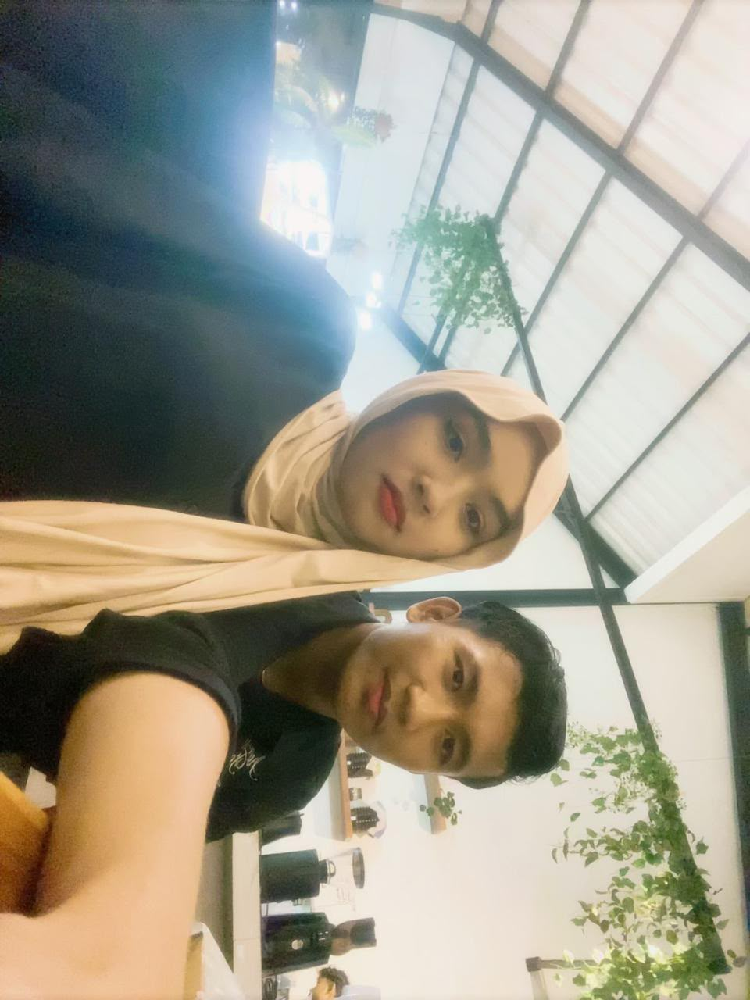
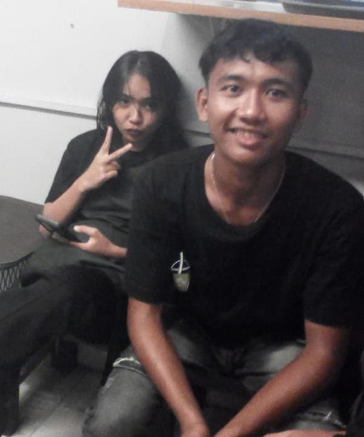
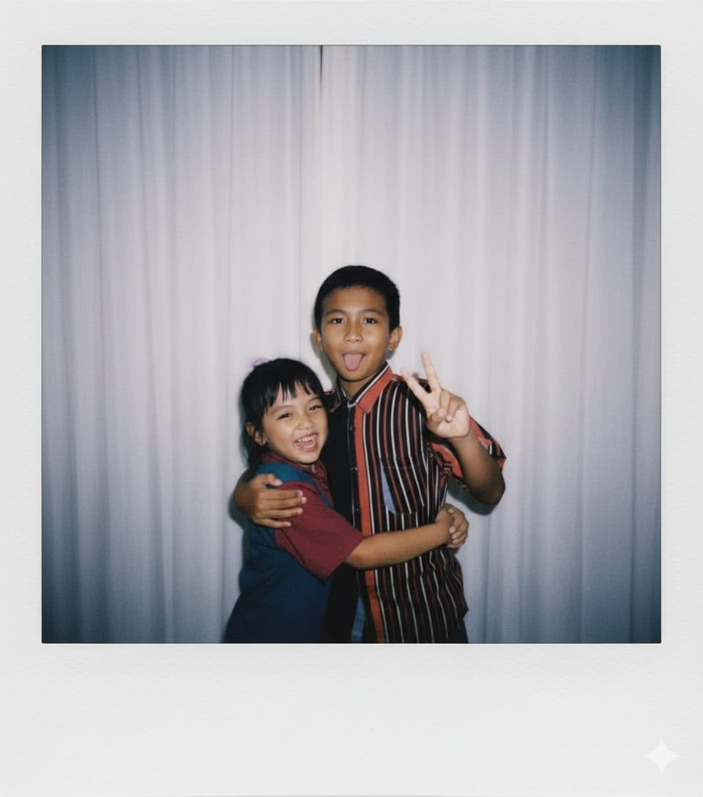

ini mungkin sangat sederhana tapi ini dibuat dari hati dan ketulusan aku, hai orang yang paling aku sayangg rasanya dunia aku bakal sepi kalo ga ada sayang terimakasih sudah menemani aku selama ini dan maaf jika selalu membuatmu kecewa tapi tetap sayang selalu sama sayangg everyday, everytime, every minute, every second and forever



Spesial Untuk Kesayangan Aku ❤️
jujur, bersyukur banget bisa deket sama kamu sejauh ini. sayang tu kayak safe place buat aku di tengah-tengah hari yang kadang bikin pusing. terimakasi ya sayang udah sabar banget ngadepin aku yang kadang suka ribet sendiri. kehadiran sayang bikin hari-hari biasa jadi jauh lebih berwarna dan seru. Intinya, aku sayang banget sama sayang. ayo kita terus semangat buat ngejalanin hari dan capai hal-hal keren ke depannya. kalau nanti sayang lagi capek, ingat ada aku yang selalu siap jadi tempat buat kamu cerita atau sekadar istirahat. makasi ya udah jadi tempat ternyaman buat aku cerita apa aja tanpa harus jaim. semoga ke depannya kita bisa terus saling dukung, tumbuh bareng, dan melewati hal-hal seru lainnya berdua. sehat-sehat terus ya, jangan suka telat makan, dan tetap jadi diri kamu yang sekarang!



Tentang Kita
hai sekarang lagi di tentang ya, kira” apa ya tentang kita ini atau kita bahas rasa sayang satu sama lain?? boleh dehh. heii kalian liat kita akur” teruskan ya tapi dibalik itu kita lumayan sering berantem apalagi kalo pacar aku ini lagi cemburu huu kalah ego aku sama ego dia tapi gapapa cemburu itu wajar kok sayang itu rasa yang timbul disaat sayang cinta sama seseorang dan itu aku orang yang sayang cinta, selalu jadi pacar aku yaa sayangg aku berantem sama sayang aja udah pusing aplg harus ditinggal sama sayang apalagi awal” ldr huu itu fase ter ter ter pokoknya ga bisa dijelasin dengan kata-kata tapi sayang selalu ngajarin buat sabar dan jalanin setiap proses sayang selalu dukung aku dalam hal apapun itu apalagi pendidikan pasti paling utama, banyak hal yang aku pelajari dari sayang. always happy sama sayanggg semoga umur sayang panjang biar bisa bahagiain aku teruss


Something Special
HAI SAYANGKUU, awal pertemuan kita di pagarpark tak disangka tak diduga bisa cinlok disana dak pernah terlintas di otak aku bahwa aku biso samo sayang bakal sampe hari ini detik ini suatu kebahagian yang aku punya suatu takdir yang sangat amat indah, terimakasih ya telah lahir di dunia ini dan mengajarkan aku banyak hal dan selalu sabar menghadapi sifat bahkan sikap aku yang masih kekanakan, semoga hidup sayang dikeliling orang baik dan lindungi oleh hal baik. selalu jadi kebahagian aku, sumber kebahagian aku, selalu jadi garda terdepan untuk aku, selalu jadi tempat aku pulang. aku suka semua hal tentang sayang apapun itu selalu sama ku yaa, always sama aku, i love u more sayanggg.


Kontak
Hubungi aku kapan saja, di mana saja. always ready untuk sayang bakal jadi 911 sayang